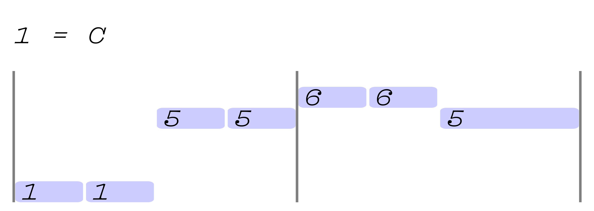

The Integer Book is a collection of sheet music visualisations that uses numbers to refer to the relative position of notes and chords within the key of the song instead of letters referring to absolute heights.

learn the method
browse sheets